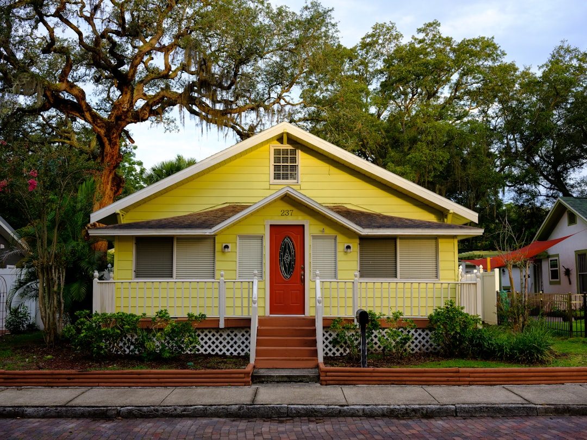

For a Tampa roof problem, start with 4 written checks: contractor verification through Florida DBPR, the observed roof condition, permit responsibility, and a line-by-line scope. The source page names 3 main roof-covering paths, asphalt shingles, metal roofing and tile roofing, plus inspection, storm-damage guidance, repair and replacement. A useful next step is not a remote diagnosis, but a written enquiry that records the property, visible symptoms and water entry.
For homeowners comparing roof repair tampa options, the practical question is whether the visible symptom points to a limited repair, a fuller inspection, or a replacement scope.
Roof Repair Tampa Explained
Roof Contractor Tampa frames the first decision around evidence: the property, visible condition and water-entry details. That is useful because a ceiling mark, displaced shingle or ageing roof does not explain the full scope on its own. The starting point is to describe what can be seen, when the issue began, whether water is entering, and what roof covering is present if known.
The published guidance separates repair, inspection and replacement so the owner can compare findings before committing. A repair should follow the likely water path through roof coverings, flashing, valleys and penetrations. An inspection should record what can be observed and what remains hidden. A replacement scope should treat the roof as an assembly, including tear-off, deck allowances, underlayment, ventilation, flashing, permits, cleanup and warranties.
Who This Applies To
This guide is for Tampa property owners who have noticed a visible roof issue and need a more disciplined conversation before asking for prices. It suits a leak question, a displaced shingle, an ageing roof, storm-related condition evidence, or a comparison between repair and replacement. It also helps when two quotes describe different scopes and the owner needs to make them comparable.
- Use it when you can describe the roof covering, approximate age, visible symptoms and previous repairs.
- Use it when access, nearby structures or safe photo evidence may affect the provider's assessment.
- Use it when permit responsibility, cleanup and exclusions need to be written down before work is accepted.
For a companion local overview, see this Tampa roof repair planning guide.
Repair Versus Replacement Questions
The source page gives a practical test: the answer depends on where the damage is, how widespread it is, the roof covering and the condition of the deck, flashing and underlayment. Those are scope questions, not sales slogans. If the decision is not obvious, ask for the inspection findings and both viable scopes in writing.
A limited repair conversation should identify the repair area and exclusions. A replacement conversation should name the layers, materials, allowances, inspections and cleanup. For asphalt shingle roofing, metal roofing and tile roofing, the covering is only one part of the decision. The supporting layers, penetrations, edges and warranty conditions may change what the written estimate should include.
Permit And Contractor Checks
The page advises owners to verify the contracting business through Florida DBPR before signing. That check should confirm the business's current Florida licence and scope. It is not enough for a quote to sound confident if the contracting business has not been checked through the state process named in the source guidance.
Permit responsibility should also be confirmed in writing. The published wording is careful: the property jurisdiction and work scope determine the permit and inspection route. In Tampa and wider Hillsborough County, that means the owner should ask which jurisdiction applies to the property, who is responsible for the permit, what inspections are expected, and whether any historic district or HOA checks could affect the work.
What A Comparable Written Estimate Includes
A line-by-line comparison is the cleanest way to avoid comparing unlike scopes. Ask each provider to describe the same roof area, roof covering, underlayment, flashing, ventilation, deck allowance, cleanup and exclusions. If the estimate mentions replacement, it should make the roof assembly clear rather than focusing only on the visible surface.
Cleanup deserves a specific line because the source checklist names it as part of replacement scope comparison. A magnetic nail sweep is a concrete detail to ask about when fasteners may be removed or replaced. Warranty language should also be tied to the named system, fasteners, penetrations, edges and conditions, especially for metal roofing where the page says a useful quote names those elements.
Storm Evidence And Enquiry Details
Storm-damage guidance on the source page separates safe observation and condition evidence from insurance decisions. The owner can record what changed, where water entered, what is visible from a safe position and whether previous repairs exist. The provider still has to confirm condition and written scope before any work is accepted.
The enquiry should include the property location, roof covering if known, approximate age, visible symptoms, when the issue began, previous repairs and whether water is entering. Photos can be provided later if a provider asks for them. Submitting the form does not confirm provider availability, timing, price, inspection or acceptance of the work.
- Describe the symptom. Record the visible issue, when it began, whether water is entering and any previous repairs.
- Verify the contractor. Check the contracting business's current Florida licence and scope through DBPR before signing.
- Confirm permit responsibility. Ask which property jurisdiction applies and who will handle permits and inspections for the written scope.
- Compare like with like. Review materials, layers, deck allowance, flashing, ventilation, cleanup and exclusions line by line.
| Decision point | Useful when | Ask for in writing |
|---|---|---|
| Repair | The issue appears localised or linked to a specific water path | Observed defect, repair area, exclusions and likely water path |
| Inspection | The cause, hidden condition or next step is uncertain | Observed findings, limits of observation and recommended next decision |
| Replacement | The roof assembly, layers or widespread condition need broader review | Tear-off, deck allowance, underlayment, ventilation, flashing, permits, cleanup and warranties |
Common questions
Should I ask for a repair or a replacement quote first? Ask for findings first when the answer is not obvious. The source page says the decision depends on damage location, spread, roof covering, deck condition, flashing and underlayment.
What details should I include in a roofing enquiry? Include the property location, roof covering if known, approximate age, visible symptoms, when the issue began, previous repairs and whether water is entering.
Does roof replacement need a permit in Tampa? The source guidance says permit and inspection routes depend on property jurisdiction and work scope. Confirm permit responsibility in writing before accepting a scope.
How do I compare Tampa roofing estimates fairly? Compare the same roof scope line by line. Look for materials, layers, deck allowance, flashing, ventilation, cleanup, exclusions and warranties rather than headline wording alone.
What should storm-related notes cover? Keep safe observation and condition evidence separate from insurance decisions. Record visible changes, water entry and timing, then let the provider confirm condition and scope.
This guide covers practical Tampa roof scope questions for repair, inspection, replacement, permits, written estimates and enquiry preparation.